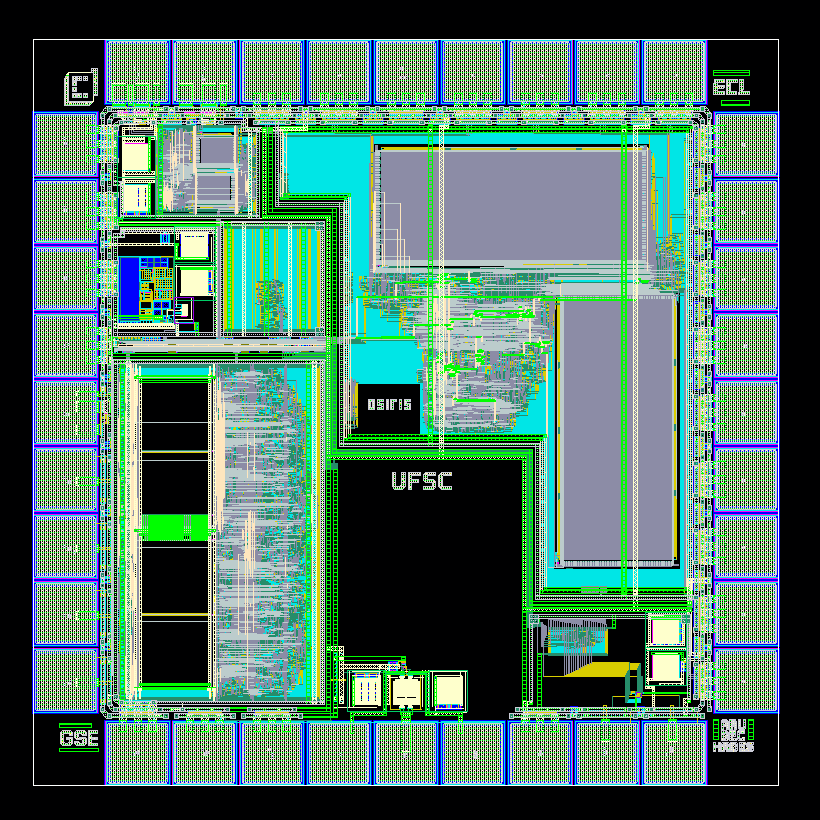

This design features a 32-bit RISC core with 16 general-purpose registers (x0–x15). Among these, x0 serves as a dedicated ZERO register. The system-on-chip (SoC) integrates an APB bus protocol and includes two 2KB SRAM memories: one for instructions and another for data. The program counter PC is a special-purpose 32-bit register. That can address at most 2³² instructions. All instructions are 32-bit. There are six instruction formats: R-type, I-type, S-type, B-Type, J-type, and U-type.
